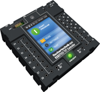

FTScratchTXT ermöglicht auf PCs bzw. Notebooks die Verwendung des fischertechnik
ROBOTICS TXT Controller
zusammen mit der einfach zu erlernenden Programmiersprache
Scratch.
So können im Handumdrehen kleine Anwendungen zur Steuerung von Motoren
und Lampen mittels Tastern, Lichtschranken, und vielen weiteren Sensoren erstellt werden.
Durch die Vielzahl an Möglichkeiten, die die Programmiersprache Scratch bietet, können auch weitaus größere Programme erstellt werden.
Neue Scratch-Erweiterungen, wie FTScratch, verwenden hierzu die Entwicklerversion
ScratchX.
Blockbeschreibung
Dieses Ereignis löst aus, sobald ein Taster / Reed-Kontakt / Lichtschranke an Universaleingang I1-I8 gedrückt / geschlossen (oder losgelassen / geöffnet) wird.
Dieses Ereignis löst aus, sobald die Anzahl der Impulse an Zähleingang C1-C4 größer / kleiner als ein eingegebener Wert bzw. in Kombination mit Blöcken aus der Rubrik „Operatoren“ entstandener Wert wird.
Dieses Ereignis löst aus, sobald der Wert von Farbsensor / Ultraschall-Abstandssensor / NTC-Widerstand / Fotowiderstand an Universaleingang I1-I8 größer / kleiner als ein eingegebener Wert bzw. in Kombination mit Blöcken aus der Rubrik „Operatoren“ entstandener Wert wird.
Über diesen Block kann der aktuelle Wert von Zähleingang C1-C4 abgefragt und für Berechnungen oder Bedingungen in Kombination mit Blöcken aus den Rubriken "Steuerung", "Operatoren" und "Ereignisse" verwendet werden. Der Rückgabewert ist ein 16-Bit Wert.
Über diesen Block kann der aktuelle Wert von Farbsensor / Ultraschall-Abstandssensor / NTC-Widerstand / Fotowiderstand an Universaleingang I1-I8 abgefragt und für Berechnungen oder Bedingungen in Kombination mit Blöcken aus den Rubriken "Steuerung", "Operatoren" und "Ereignisse" verwendet werden. Der Rückgabewert ist ein 16-Bit Wert.

Über diesen Block wird abgefragt, ob ein Taster / Reed-Kontakt / Lichtschranke an Universaleingang I1-I8 gedrückt / geschlossen (oder losgelassen / geöffnet) ist. Kann für Berechnungen oder Bedingungen in Kombination mit Blöcken aus den Rubriken "Steuerung", "Operatoren" und "Ereignisse" verwendet werden. Die Rückgabe ist ein Boole’scher Wert.
Über diesen Block kann das Abspielen der installierten Sound-Dateien 1 - 29 gestartet werden.
Über diesen Block kann das Abspielen der installierten Sound-Dateien 1 - 29 gestartet werden. Es wird bis zum Ende des Abspielens gewartet, bevor weitere Befehle ausgeführt werden.
Über diesen Block kann der Ausgang O1 - O8 für z.B. eine Lampe auf einen Wert von 0...8 gesetzt werden. Werte kleiner 0 bzw. größer 8 werden auf 0 bzw. 8 abgeschnitten.
Über diesen Block kann der Ausgang O1 - O8 auf einen Wert von 0...8 gesetzt werden. Werte kleiner 0 bzw. größer 8 werden auf 0 bzw. 8 abgeschnitten.
Über diesen Block kann der aktuelle Wert von Zähleingang C1 - C4 zurückgesetzt werden.
Über diesen Block kann der Ausgang M1 - M4 für z.B. einen Motor auf einen Wert von 0...8 gesetzt werden.
Werte kleiner 0 bzw. größer 8 werden auf 0 bzw. 8 abgeschnitten.
Über diesen Block kann der Ausgang M1 - M4 für z.B. einen Motor auf vorwärts (rückwärts) gesetzt werden mit einem Wert von 0...8.
Werte kleiner 0 bzw. größer 8 werden auf 0 bzw. 8 abgeschnitten.
Über diesen Block kann der Ausgang M1 - M4 für z.B. einen Motor auf vorwärts (rückwärts) abgeändert werden.
Über diesen Block kann ein Motor an Ausgang M1 - M4 gestoppt werden.
Der zugehörige Zähler wird nicht verändert.

Über diesen Block kann der Ausgang M1 - M4 für z.B. einen Motor für eine einstellbare Anzahl von Schritten und einer Geschwindigkeit von 1...8 auf vorwärts / rückwärts gesetzt werden.
Vor der Ausführung wird der zugehörige Zähler zurückgesetzt.
Die Ausführung blockiert, bis die gewählte Distanz abgefahren wurde.
Erst nach Ausführung von Block „Stoppe Verfahren" oder "Zurücksetzen" können die Ausgänge M1 - M4 wieder individuell gestartet werden.
Über diesen Block können je zwei der Ausgänge M1 - M4 für z.B. einen Motor synchron mit einer Geschwindigkeit von 1...8 auf vorwärts / rückwärts gesetzt werden.
Erst nach Ausführung von Block „Stoppe Verfahren" oder "Zurücksetzen" können die Ausgänge M1 - M4 wieder individuell gestartet werden.
Dieser Block ist eine Kombination der beiden vorhergehenden Blöcke.
Vor der Ausführung wird der zugehörige Zähler zurückgesetzt.
Die Ausführung blockiert, bis die gewählte Distanz abgefahren wurde.
Erst nach Ausführung von Block „Stoppe Verfahren" oder "Zurücksetzen" können die Ausgänge M1 - M4 wieder individuell gestartet werden.
Über diesen Block kann ein Motor an Ausgang M1 - M4 gestoppt werden.
Der zugehörige Zähler wird zurückgesetzt, Synchronisierungen mit anderen Motoren werden aufgehoben.
Über diesen Block kann der Universaleingang I1 - I8 von digital nach analog umgeschaltet werden.
Dieser Block setzt den ROBO TXT zurück.
Alle Ausgänge und Zähler werden auf 0 gesetzt.
Synchronisierungen zwischen Motoren werden aufgehoben.